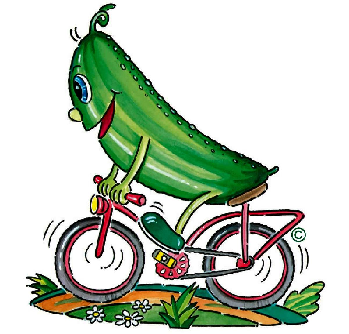
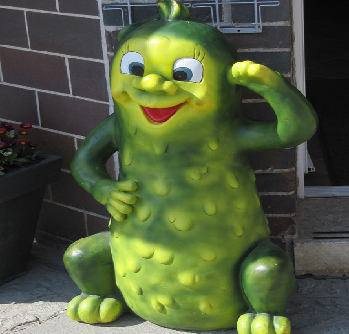

Spreewaldgurken
We provide you with relevant and concise information material on the place, tour guides, souvenirs and tickets for events. Prepare for a roller-coaster ride of feasts, treats, soul-stirring scenery, intriguing culture,and romantic scenes to educate yourself and relax your mind?
-

Forest Cycling Tour
We present you the opportunity to enjoy an educational trip through the forest reserve and its surroundings with vintage bycicles that are more than five decades old. Ride through serene enviromnments and enjoy natures awesomeness as you exercise you body too. We have landmark stops where we show you educational videos of tree species and funny animal behavorial videos to help you rejuvenate for the next hurdle.
-

River Boat-ride Tour
We take you on a smooth boat ride along the rivers in the misdst of the forest reserve. This four hour journey on boats through the forest is a purely relaxing trip with ladmark stops for picknicking and education on plant and animal species.
-

Food and Cultural Tourism
Spreewald Gherkin or Cocumber fields are well known in the state of Brandenburg and Germany at large. The richness of soil in Spreewald together with local recipies presents distinguished tasty foods that cannot be found elsewhere. We also take you through history and culture that dates back to the last world war and very unique experiences.
Spreewald - Zurück zum Ich
Swap the noise of the city for the rich sounds of nature. Come to the holiday in the Spreewald. In just a few hours, the best conditions for a journey to yourself. Discover your inner balance in the midst of nature. A Spreewald vacation has many faces. Whether active by bike or directly with the paddle boat on the classic waterways of the region. Time will come to life in the Spreewald. Do you keep moving on holiday? The region offers relaxation in wellness and SPA in comfortable hotels, not only in the spontaneous break and short break ...
Contact Us
Hofladen in Klein Radden Marktstände in Beuchow, Boblitz, Burg, Duben, Eichow, Erkner, Lauchhammer, Lübben, Ragow, Schöneiche und Schwarzheide.
contact@spreewahld.de
About Our services
You are on holiday in the Spreewald for the first time and do not know what you can do in your spare time? The tips below will help you plan your trip to the Spreewald better. Because in addition to paddling, cycling and the popular boat trips, there are many more recreational opportunities and destinations to discover.